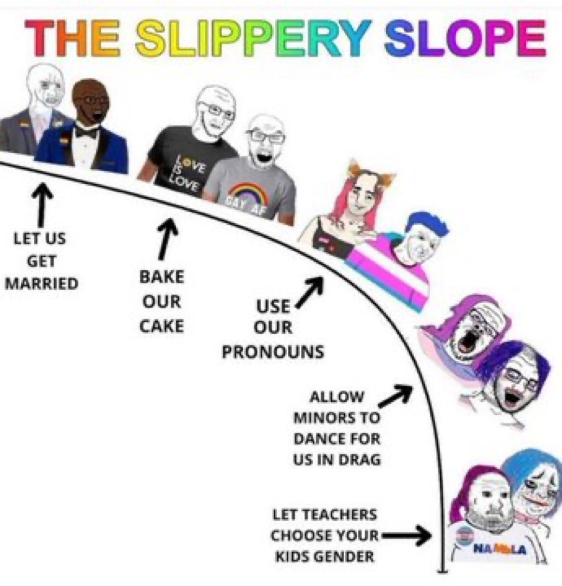

How LGBT and Their Supporters Contradict Themselves
LGBT and their Supporters: “If you believe that homosexuality is weird, gross, unnatural, abnormal, etc then your a bigoted homophobe.”
Me: “Interesting. Let me ask you what’s your opinion if two biological brothers hook up or if two biological sisters hook up?”
LGBT and their Supporters: “Eww that’s disgusting.”
Me: “Well your an incest-phobe you bigot”
——
When Liberals and LGBT people complain about us using the “Slippery Slope Fallacy”

Anyone who accuses us of using the slippery slope fallacy clearly doesn’t know the history of liberalism. Liberals in the past used to oppose homosexuality, atheism, fornication, porn, etc. However as they got more progressive they become more accepting of all these things. This slippery slope literally did happen in history so we’re right when we say “Are these people gonna accept incest, Beastiality, pedophilia, etc next?”
——
Contradiction between LGBT and the notion of there being multiple genders
1.)If the “B” in LGBT means “Bisexual” wouldn’t that mean that there are only 2 genders?
2.) If someone is transgender that means they can only switch from man to woman or woman to man. If that’s the case wouldn’t that mean that there are only 2 genders?
3.) If gender is a social construct and the terms “man” and “woman” can mean anything wouldn’t that render terms such as “gay” “lesbian” and “straight” obsolete since you have to know what the terms “man” and “woman” are in order to define “gay” “lesbian” and “straight”
Debunking the notion “If you criticize LGBT your a bigot”
Even pro-gay academics like John Corvino & Lisa Waldner encourage criticism against LGBT instead of slanderously dismissing it as "bigotry”
https://johncorvino.com/2009/05/gay-marriage-and-the-bigot-card/